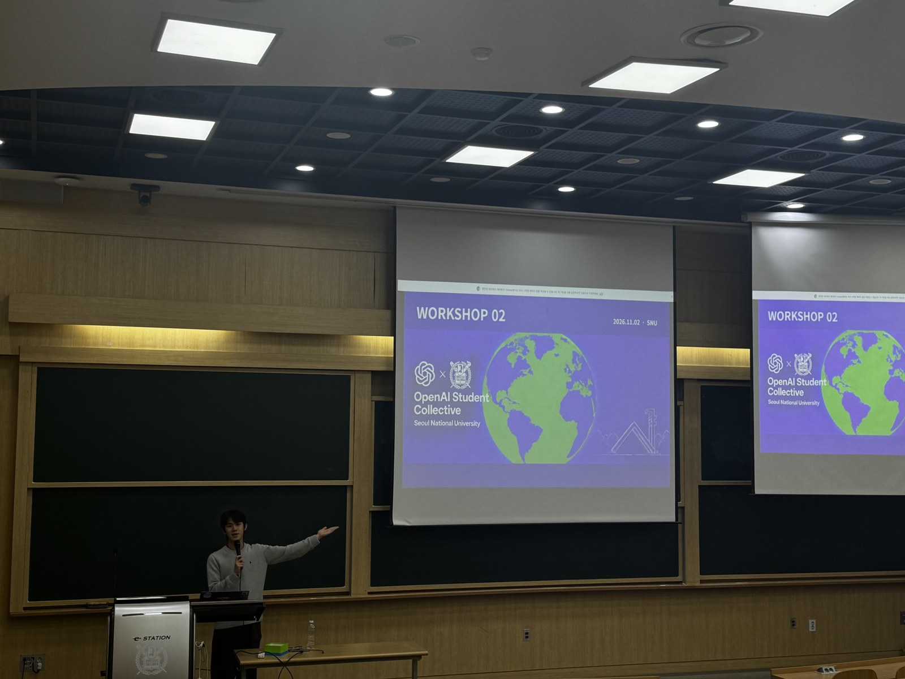

Build · Share · Learn
아이디어를 직접 구현하고,
사람들에게 공유해요.
서울대학교에서 함께 만드는 웹사이트. 작은 변화부터 시작해 내 사이트를 공개하고, 다음 버전을 만들어 봅니다.

Workshop 02
웹사이트 배포와 버전 관리고치고, 기록하고, 공개하기
파일을 공개 URL로 배포하고, GitHub에 변경을 기록합니다.
Preview에서 먼저 확인한 다음 정식 사이트에 반영해요.
실습 확인: 버튼 문구 · 같은 신청 링크 · 수업 자료 이동 · 새로고침 · 휴대폰 화면
Across campuses
다른 캠퍼스의 활동도 만나 보세요.
Student Collective 예제의 서울대 카드에서 이 화면으로 다시 돌아올 수 있어요.
Student Collective 열기 →